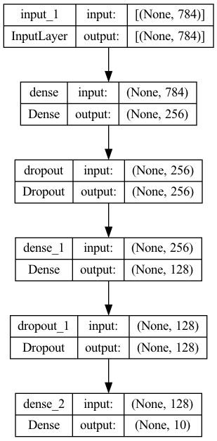

Display system information for reproducibility.
import IPythonprint (IPython.sys_info())
{'commit_hash': '5ed988a91',
'commit_source': 'installation',
'default_encoding': 'utf-8',
'ipython_path': '/Users/jinjinzhou/.virtualenvs/r-tensorflow/lib/python3.10/site-packages/IPython',
'ipython_version': '8.33.0',
'os_name': 'posix',
'platform': 'macOS-15.7.4-arm64-arm-64bit',
'sys_executable': '/Users/jinjinzhou/.virtualenvs/r-tensorflow/bin/python',
'sys_platform': 'darwin',
'sys_version': '3.10.16 (main, Mar 3 2025, 20:01:33) [Clang 16.0.0 '
'(clang-1600.0.26.6)]'}
R version 4.5.2 (2025-10-31)
Platform: aarch64-apple-darwin20
Running under: macOS Sequoia 15.7.4
Matrix products: default
BLAS: /System/Library/Frameworks/Accelerate.framework/Versions/A/Frameworks/vecLib.framework/Versions/A/libBLAS.dylib
LAPACK: /Library/Frameworks/R.framework/Versions/4.5-arm64/Resources/lib/libRlapack.dylib; LAPACK version 3.12.1
locale:
[1] en_US.UTF-8/en_US.UTF-8/en_US.UTF-8/C/en_US.UTF-8/en_US.UTF-8
time zone: America/Los_Angeles
tzcode source: internal
attached base packages:
[1] stats graphics grDevices utils datasets methods base
loaded via a namespace (and not attached):
[1] digest_0.6.37 fastmap_1.2.0 xfun_0.56 Matrix_1.7-4
[5] lattice_0.22-7 reticulate_1.44.1 knitr_1.50 htmltools_0.5.8.1
[9] png_0.1-8 rmarkdown_2.29 cli_3.6.5 grid_4.5.2
[13] compiler_4.5.2 rstudioapi_0.17.1 tools_4.5.2 evaluate_1.0.5
[17] Rcpp_1.1.0 yaml_2.3.10 rlang_1.1.6 jsonlite_2.0.0
[21] htmlwidgets_1.6.4
Load some libraries.
# Load the pandas library import pandas as pd# Load numpy for array manipulation import numpy as np# Load seaborn plotting library import seaborn as snsimport matplotlib.pyplot as plt# Set font sizes in plots set (font_scale = 1.2 )# Display all columns 'display.max_columns' , None )# Load Tensorflow and Keras import tensorflow as tffrom tensorflow import kerasfrom tensorflow.keras import layers
In this example, we train an MLP (multi-layer perceptron) on the MNIST data set. Achieve testing accuracy 98.11% after 30 epochs.
The MNIST database (Modified National Institute of Standards and Technology database) is a large database of handwritten digits (\(28 \times 28\) ) that is commonly used for training and testing machine learning algorithms.
60,000 training images, 10,000 testing images.
Prepare data
Acquire data:
# Load the data and split it between train and test sets = keras.datasets.mnist.load_data()# Training set
Display the first training instance and its label:
import matplotlib.pyplot as plt# Feature: digit 0 ]);
<- dataset_mnist ()<- mnist$ train$ x<- mnist$ train$ y<- mnist$ test$ x<- mnist$ test$ y
Training set:
image (t (x_train[1 , 28 : 1 ,]), useRaster = TRUE , axes = FALSE , col = grey (seq (0 , 1 , length = 256 ))
Testing set:
Vectorize \(28 \times 28\) images into \(784\) -vectors and scale entries to [0, 1]:
# Reshape = np.reshape(x_train, [x_train.shape[0 ], 784 ])= np.reshape(x_test, [x_test.shape[0 ], 784 ])# Rescale = x_train / 255 = x_test / 255 # Train
# reshape <- array_reshape (x_train, c (nrow (x_train), 784 ))<- array_reshape (x_test, c (nrow (x_test), 784 ))# rescale <- x_train / 255 <- x_test / 255 dim (x_train)
Encode \(y\) as binary class matrix:
= keras.utils.to_categorical(y_train, 10 )= keras.utils.to_categorical(y_test, 10 )# Train # First train instance 0 ]
array([0., 0., 0., 0., 0., 1., 0., 0., 0., 0.])
<- to_categorical (y_train, 10 )<- to_categorical (y_test, 10 )dim (y_train)
[,1] [,2] [,3] [,4] [,5] [,6] [,7] [,8] [,9] [,10]
[1,] 0 0 0 0 0 1 0 0 0 0
[2,] 1 0 0 0 0 0 0 0 0 0
[3,] 0 0 0 0 1 0 0 0 0 0
[4,] 0 1 0 0 0 0 0 0 0 0
[5,] 0 0 0 0 0 0 0 0 0 1
[6,] 0 0 1 0 0 0 0 0 0 0
Define the model
Define a sequential model (a linear stack of layers) with 2 fully-connected hidden layers (256 and 128 neurons):
= keras.Sequential(= (784 ,)),= 256 , activation = 'relu' ),= 0.4 ),= 128 , activation = 'relu' ),= 0.3 ),= 10 , activation = 'softmax' )
Model: "sequential"
┏━━━━━━━━━━━━━━━━━━━━━━━━━━━━━━━━━┳━━━━━━━━━━━━━━━━━━━━━━━━┳━━━━━━━━━━━━━━━┓
┃ Layer (type) ┃ Output Shape ┃ Param # ┃
┡━━━━━━━━━━━━━━━━━━━━━━━━━━━━━━━━━╇━━━━━━━━━━━━━━━━━━━━━━━━╇━━━━━━━━━━━━━━━┩
│ dense (Dense) │ (None, 256) │ 200,960 │
├─────────────────────────────────┼────────────────────────┼───────────────┤
│ dropout (Dropout) │ (None, 256) │ 0 │
├─────────────────────────────────┼────────────────────────┼───────────────┤
│ dense_1 (Dense) │ (None, 128) │ 32,896 │
├─────────────────────────────────┼────────────────────────┼───────────────┤
│ dropout_1 (Dropout) │ (None, 128) │ 0 │
├─────────────────────────────────┼────────────────────────┼───────────────┤
│ dense_2 (Dense) │ (None, 10) │ 1,290 │
└─────────────────────────────────┴────────────────────────┴───────────────┘
Total params: 235,146 (918.54 KB)
Trainable params: 235,146 (918.54 KB)
Non-trainable params: 0 (0.00 B)
Plot the model:
= "model.png" ,= True ,= False ,= True ,= "TB" ,= False ,= 96 ,= None ,= False ,
You must install pydot (`pip install pydot`) for `plot_model` to work.

<- keras_model_sequential () %>% layer_dense (units = 256 , activation = 'relu' , input_shape = c (784 )) %>% layer_dropout (rate = 0.4 ) %>% layer_dense (units = 128 , activation = 'relu' ) %>% layer_dropout (rate = 0.3 ) %>% layer_dense (units = 10 , activation = 'softmax' )summary (model)
Model: "sequential_1"
┏━━━━━━━━━━━━━━━━━━━━━━━━━━━━━━━━━━━┳━━━━━━━━━━━━━━━━━━━━━━━━━━┳━━━━━━━━━━━━━━━┓
┃ Layer (type) ┃ Output Shape ┃ Param # ┃
┡━━━━━━━━━━━━━━━━━━━━━━━━━━━━━━━━━━━╇━━━━━━━━━━━━━━━━━━━━━━━━━━╇━━━━━━━━━━━━━━━┩
│ dense_3 (Dense) │ (None, 256) │ 200,960 │
├───────────────────────────────────┼──────────────────────────┼───────────────┤
│ dropout_2 (Dropout) │ (None, 256) │ 0 │
├───────────────────────────────────┼──────────────────────────┼───────────────┤
│ dense_4 (Dense) │ (None, 128) │ 32,896 │
├───────────────────────────────────┼──────────────────────────┼───────────────┤
│ dropout_3 (Dropout) │ (None, 128) │ 0 │
├───────────────────────────────────┼──────────────────────────┼───────────────┤
│ dense_5 (Dense) │ (None, 10) │ 1,290 │
└───────────────────────────────────┴──────────────────────────┴───────────────┘
Total params: 235,146 (918.54 KB)
Trainable params: 235,146 (918.54 KB)
Non-trainable params: 0 (0.00 B)
Compile the model with appropriate loss function, optimizer, and metrics:
compile (= "categorical_crossentropy" ,= "rmsprop" ,= ["accuracy" ]
%>% compile (loss = 'categorical_crossentropy' ,optimizer = optimizer_rmsprop (),metrics = c ('accuracy' )
Training and validation
80%/20% split for the train/validation set.
= 128 = 30 = model.fit(= batch_size,= epochs,= 0.2
Plot training history:
Code
= pd.DataFrame(history.history)'epoch' ] = np.arange(1 , epochs + 1 )= hist.melt(= ['epoch' ],= ['loss' , 'accuracy' , 'val_loss' , 'val_accuracy' ],= 'type' ,= 'value' 'split' ] = np.where(['val' in s for s in hist['type' ]], 'validation' , 'train' )'metric' ] = np.where(['loss' in s for s in hist['type' ]], 'loss' , 'accuracy' )# Accuracy trace plot = hist[hist['metric' ] == 'accuracy' ],= 'scatter' ,= 'epoch' ,= 'value' ,= 'split' set (= 'Epoch' ,= 'Accuracy' ;
Code
# Loss trace plot = hist[hist['metric' ] == 'loss' ],= 'scatter' ,= 'epoch' ,= 'value' ,= 'split' set (= 'Epoch' ,= 'Loss' ;
system.time ({<- model %>% fit (epochs = 30 , batch_size = 128 , validation_split = 0.2
Epoch 1/30
375/375 - 1s - 3ms/step - accuracy: 0.8649 - loss: 0.4414 - val_accuracy: 0.9458 - val_loss: 0.1820
Epoch 2/30
375/375 - 1s - 2ms/step - accuracy: 0.9409 - loss: 0.2002 - val_accuracy: 0.9657 - val_loss: 0.1140
Epoch 3/30
375/375 - 1s - 2ms/step - accuracy: 0.9532 - loss: 0.1557 - val_accuracy: 0.9684 - val_loss: 0.1060
Epoch 4/30
375/375 - 1s - 2ms/step - accuracy: 0.9607 - loss: 0.1298 - val_accuracy: 0.9708 - val_loss: 0.1030
Epoch 5/30
375/375 - 1s - 2ms/step - accuracy: 0.9656 - loss: 0.1160 - val_accuracy: 0.9737 - val_loss: 0.0878
Epoch 6/30
375/375 - 1s - 2ms/step - accuracy: 0.9689 - loss: 0.1035 - val_accuracy: 0.9750 - val_loss: 0.0932
Epoch 7/30
375/375 - 1s - 2ms/step - accuracy: 0.9728 - loss: 0.0960 - val_accuracy: 0.9766 - val_loss: 0.0859
Epoch 8/30
375/375 - 1s - 2ms/step - accuracy: 0.9733 - loss: 0.0896 - val_accuracy: 0.9777 - val_loss: 0.0882
Epoch 9/30
375/375 - 1s - 2ms/step - accuracy: 0.9762 - loss: 0.0801 - val_accuracy: 0.9769 - val_loss: 0.0853
Epoch 10/30
375/375 - 1s - 2ms/step - accuracy: 0.9770 - loss: 0.0778 - val_accuracy: 0.9770 - val_loss: 0.0923
Epoch 11/30
375/375 - 1s - 2ms/step - accuracy: 0.9784 - loss: 0.0717 - val_accuracy: 0.9782 - val_loss: 0.0845
Epoch 12/30
375/375 - 1s - 2ms/step - accuracy: 0.9786 - loss: 0.0708 - val_accuracy: 0.9783 - val_loss: 0.0910
Epoch 13/30
375/375 - 1s - 2ms/step - accuracy: 0.9793 - loss: 0.0676 - val_accuracy: 0.9786 - val_loss: 0.0896
Epoch 14/30
375/375 - 1s - 2ms/step - accuracy: 0.9806 - loss: 0.0647 - val_accuracy: 0.9769 - val_loss: 0.0941
Epoch 15/30
375/375 - 1s - 2ms/step - accuracy: 0.9814 - loss: 0.0603 - val_accuracy: 0.9785 - val_loss: 0.0903
Epoch 16/30
375/375 - 1s - 2ms/step - accuracy: 0.9821 - loss: 0.0594 - val_accuracy: 0.9786 - val_loss: 0.0880
Epoch 17/30
375/375 - 1s - 2ms/step - accuracy: 0.9817 - loss: 0.0593 - val_accuracy: 0.9793 - val_loss: 0.0877
Epoch 18/30
375/375 - 1s - 2ms/step - accuracy: 0.9837 - loss: 0.0526 - val_accuracy: 0.9791 - val_loss: 0.0976
Epoch 19/30
375/375 - 1s - 2ms/step - accuracy: 0.9839 - loss: 0.0544 - val_accuracy: 0.9798 - val_loss: 0.0907
Epoch 20/30
375/375 - 1s - 2ms/step - accuracy: 0.9844 - loss: 0.0535 - val_accuracy: 0.9808 - val_loss: 0.0880
Epoch 21/30
375/375 - 1s - 2ms/step - accuracy: 0.9848 - loss: 0.0511 - val_accuracy: 0.9795 - val_loss: 0.0901
Epoch 22/30
375/375 - 1s - 2ms/step - accuracy: 0.9858 - loss: 0.0475 - val_accuracy: 0.9791 - val_loss: 0.0940
Epoch 23/30
375/375 - 1s - 2ms/step - accuracy: 0.9847 - loss: 0.0508 - val_accuracy: 0.9817 - val_loss: 0.0848
Epoch 24/30
375/375 - 1s - 2ms/step - accuracy: 0.9861 - loss: 0.0457 - val_accuracy: 0.9798 - val_loss: 0.0883
Epoch 25/30
375/375 - 1s - 2ms/step - accuracy: 0.9864 - loss: 0.0453 - val_accuracy: 0.9797 - val_loss: 0.0942
Epoch 26/30
375/375 - 1s - 2ms/step - accuracy: 0.9860 - loss: 0.0456 - val_accuracy: 0.9817 - val_loss: 0.0972
Epoch 27/30
375/375 - 1s - 2ms/step - accuracy: 0.9870 - loss: 0.0439 - val_accuracy: 0.9808 - val_loss: 0.0956
Epoch 28/30
375/375 - 1s - 2ms/step - accuracy: 0.9870 - loss: 0.0441 - val_accuracy: 0.9807 - val_loss: 0.0979
Epoch 29/30
375/375 - 1s - 2ms/step - accuracy: 0.9869 - loss: 0.0444 - val_accuracy: 0.9808 - val_loss: 0.0972
Epoch 30/30
375/375 - 1s - 2ms/step - accuracy: 0.9881 - loss: 0.0408 - val_accuracy: 0.9806 - val_loss: 0.1031
user system elapsed
49.522 24.040 21.916
Testing
Evaluate model performance on the test data:
= model.evaluate(x_test, y_test, verbose = 0 )print ("Test loss:" , score[0 ])
Test loss: 0.09024184942245483
print ("Test accuracy:" , score[1 ])
Test accuracy: 0.9829000234603882
%>% evaluate (x_test, y_test)
313/313 - 0s - 459us/step - accuracy: 0.9812 - loss: 0.0877
$accuracy
[1] 0.9812
$loss
[1] 0.08772846
Generate predictions on new data:
<- predict (model, x_test)
313/313 - 0s - 466us/step
<- max.col (pred) # 1-based
Exercise
Suppose we want to fit a multinomial-logit model and use it as a baseline method to neural networks. How to do that? Of course we can use mlogit or other packages. Instead we can fit the same model using keras, since multinomial-logit is just an MLP with (1) one input layer with linear activation and (2) one output layer with softmax link function.
# set up model library (keras)<- keras_model_sequential () %>% # no need for hidden layers, since multinomial-logit is a linear model # layer_dense(units = 256, activation = 'linear', input_shape = c(784)) %>% # layer_dropout(rate = 0.4) %>% layer_dense (units = 10 , activation = 'softmax' , input_shape = c (784 ))# L2 regularization # layer_dense( # units = 10, activation = "softmax", input_shape = c(784), # kernel_regularizer = regularizer_l2(1e-4) # ) summary (mlogit)
Model: "sequential_2"
┏━━━━━━━━━━━━━━━━━━━━━━━━━━━━━━━━━━━┳━━━━━━━━━━━━━━━━━━━━━━━━━━┳━━━━━━━━━━━━━━━┓
┃ Layer (type) ┃ Output Shape ┃ Param # ┃
┡━━━━━━━━━━━━━━━━━━━━━━━━━━━━━━━━━━━╇━━━━━━━━━━━━━━━━━━━━━━━━━━╇━━━━━━━━━━━━━━━┩
│ dense_6 (Dense) │ (None, 10) │ 7,850 │
└───────────────────────────────────┴──────────────────────────┴───────────────┘
Total params: 7,850 (30.66 KB)
Trainable params: 7,850 (30.66 KB)
Non-trainable params: 0 (0.00 B)
# compile model %>% compile (loss = 'categorical_crossentropy' ,optimizer = optimizer_rmsprop (),metrics = c ('accuracy' )
Model: "sequential_2"
┏━━━━━━━━━━━━━━━━━━━━━━━━━━━━━━━━━━━┳━━━━━━━━━━━━━━━━━━━━━━━━━━┳━━━━━━━━━━━━━━━┓
┃ Layer (type) ┃ Output Shape ┃ Param # ┃
┡━━━━━━━━━━━━━━━━━━━━━━━━━━━━━━━━━━━╇━━━━━━━━━━━━━━━━━━━━━━━━━━╇━━━━━━━━━━━━━━━┩
│ dense_6 (Dense) │ (None, 10) │ 7,850 │
└───────────────────────────────────┴──────────────────────────┴───────────────┘
Total params: 7,850 (30.66 KB)
Trainable params: 7,850 (30.66 KB)
Non-trainable params: 0 (0.00 B)
# fit model <- mlogit %>% fit (epochs = 20 , batch_size = 128 , validation_split = 0.2
Epoch 1/20
375/375 - 0s - 1ms/step - accuracy: 0.8402 - loss: 0.6558 - val_accuracy: 0.9031 - val_loss: 0.3573
Epoch 2/20
375/375 - 0s - 598us/step - accuracy: 0.9031 - loss: 0.3523 - val_accuracy: 0.9114 - val_loss: 0.3111
Epoch 3/20
375/375 - 0s - 607us/step - accuracy: 0.9112 - loss: 0.3179 - val_accuracy: 0.9181 - val_loss: 0.2922
Epoch 4/20
375/375 - 0s - 599us/step - accuracy: 0.9156 - loss: 0.3023 - val_accuracy: 0.9203 - val_loss: 0.2828
Epoch 5/20
375/375 - 0s - 606us/step - accuracy: 0.9179 - loss: 0.2923 - val_accuracy: 0.9222 - val_loss: 0.2779
Epoch 6/20
375/375 - 0s - 593us/step - accuracy: 0.9202 - loss: 0.2856 - val_accuracy: 0.9249 - val_loss: 0.2742
Epoch 7/20
375/375 - 0s - 607us/step - accuracy: 0.9215 - loss: 0.2808 - val_accuracy: 0.9262 - val_loss: 0.2741
Epoch 8/20
375/375 - 0s - 1ms/step - accuracy: 0.9221 - loss: 0.2769 - val_accuracy: 0.9268 - val_loss: 0.2693
Epoch 9/20
375/375 - 0s - 893us/step - accuracy: 0.9241 - loss: 0.2736 - val_accuracy: 0.9271 - val_loss: 0.2692
Epoch 10/20
375/375 - 0s - 724us/step - accuracy: 0.9246 - loss: 0.2711 - val_accuracy: 0.9271 - val_loss: 0.2667
Epoch 11/20
375/375 - 0s - 677us/step - accuracy: 0.9254 - loss: 0.2685 - val_accuracy: 0.9284 - val_loss: 0.2671
Epoch 12/20
375/375 - 0s - 633us/step - accuracy: 0.9266 - loss: 0.2666 - val_accuracy: 0.9274 - val_loss: 0.2651
Epoch 13/20
375/375 - 0s - 624us/step - accuracy: 0.9271 - loss: 0.2647 - val_accuracy: 0.9287 - val_loss: 0.2647
Epoch 14/20
375/375 - 0s - 610us/step - accuracy: 0.9272 - loss: 0.2637 - val_accuracy: 0.9294 - val_loss: 0.2661
Epoch 15/20
375/375 - 0s - 609us/step - accuracy: 0.9279 - loss: 0.2621 - val_accuracy: 0.9299 - val_loss: 0.2641
Epoch 16/20
375/375 - 0s - 589us/step - accuracy: 0.9283 - loss: 0.2608 - val_accuracy: 0.9287 - val_loss: 0.2644
Epoch 17/20
375/375 - 0s - 602us/step - accuracy: 0.9284 - loss: 0.2595 - val_accuracy: 0.9288 - val_loss: 0.2636
Epoch 18/20
375/375 - 0s - 609us/step - accuracy: 0.9289 - loss: 0.2584 - val_accuracy: 0.9287 - val_loss: 0.2637
Epoch 19/20
375/375 - 0s - 600us/step - accuracy: 0.9290 - loss: 0.2573 - val_accuracy: 0.9307 - val_loss: 0.2620
Epoch 20/20
375/375 - 0s - 590us/step - accuracy: 0.9298 - loss: 0.2562 - val_accuracy: 0.9310 - val_loss: 0.2623
# Evaluate model performance on the test data: %>% evaluate (x_test, y_test)
313/313 - 0s - 376us/step - accuracy: 0.9262 - loss: 0.2676
$accuracy
[1] 0.9262
$loss
[1] 0.2676094
Generate predictions on new data:
<- predict (model, x_test) # (n_samples, n_classes)
313/313 - 0s - 343us/step
<- as.array (op_argmax (pred, axis = 2 )) # 1-based indices
Experiment: Change the linear activation to relu in the multinomial-logit model and see the change in classification accuracy.